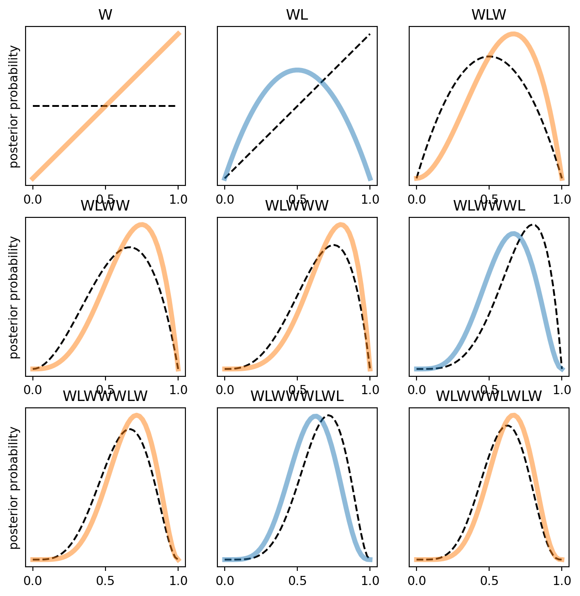
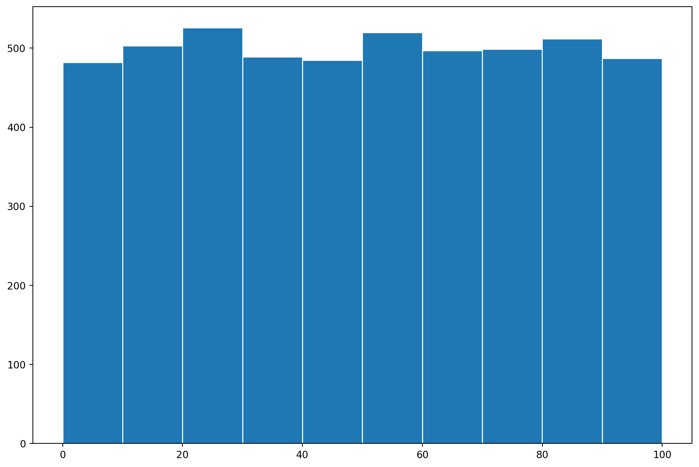
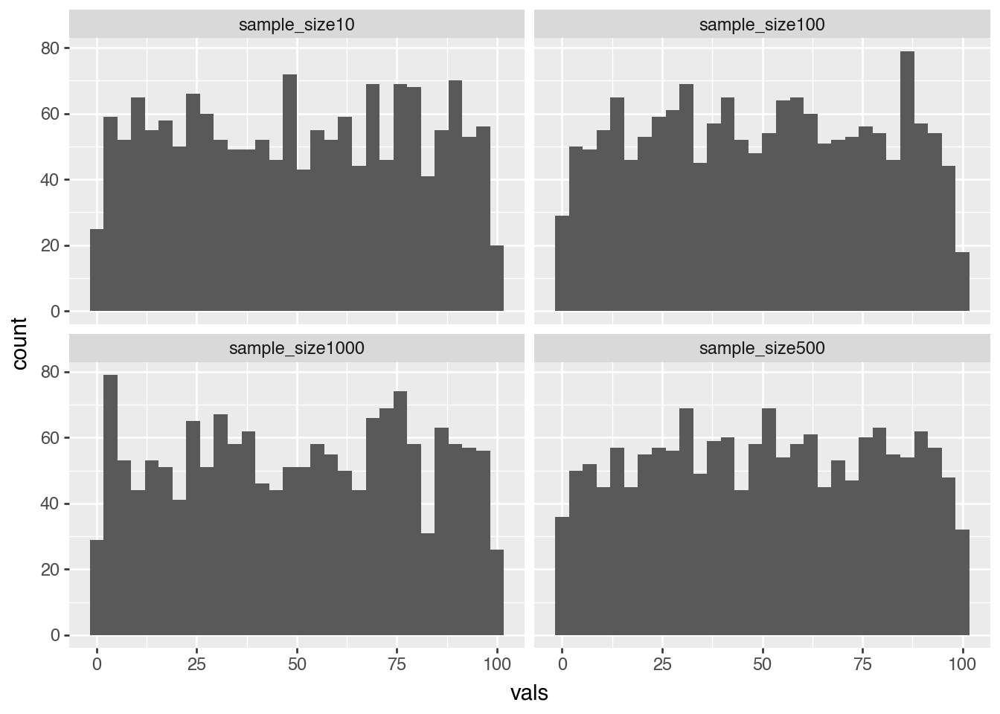

import numpy as np
from scipy import stats as stats
import matplotlib.pyplot as plt
from plotnine import *
import polars as pl
numbs = np.array([1, 3, 4, 3])
1 / numbs.sum()np.float64(0.09090909090909091)We have our general sense of probabilities where we are just the number of times things occur. This is kind of helpful.
import numpy as np
from scipy import stats as stats
import matplotlib.pyplot as plt
from plotnine import *
import polars as pl
numbs = np.array([1, 3, 4, 3])
1 / numbs.sum()np.float64(0.09090909090909091)However, for the most part in the real world we don’t neccessarily care about the probability of a single event happening unconditionally. Conditioanl probability is genereallly a little weird but not totally different than just counting.
There are two ways we generally think of basic condiitonal probability Frequentistly and Bayesianly. For the most part these are fairly similar. The key difference is how we incorporate what we know about the world.
In Frequentism people often say that we don’t impose any priors on the data. This is not true in any real sense because we impose a flat prior. So the prior is kind of incorporated for us. Typically we see conditional probabilities expressed in two ways
\[ \text{P(A|B)} = \frac{\text{Probability of A and B Hapenning}}{\text{Probability of B happening}} \\\ \text{P(A|B)} = \frac{\text{P(A)} \cap \text{P(B)}}{\text{P(B)}} \]
This is a bit hard to visualize so lets take an example
Rows: 6
Columns: 3
$ party <str> 'Democrats', 'Republican', 'Independents', 'Democrats', 'Republican', 'Independents'
$ gender <str> 'Men', 'Men', 'Men', 'Woman', 'Woman', 'Woman'
$ total <i64> 33, 40, 2, 15, 9, 1
So if we wanted to calculate the conditional probability of drawing a female democratic senator we would really just do this.
womand_democrat = senators.filter((pl.col('gender') == 'Woman') & (pl.col('party') == 'Democrats'))['total']
democrat = senators.filter(pl.col('party') == 'Democrats').with_columns(total = pl.col('total').sum())['total'][0]
denom = 100
(womand_democrat/100)/(democrat/100)| total |
|---|
| f64 |
| 0.3125 |
So this will roughly get us that the odds of drawing a female democratic senator is 0.31.
Bayesians view conditional probability in a slightly different way. But as Richard McCelreath argues that isn’t entirely true in this canned example. Typically we define Bayes Rule as something along these lines.
\[\begin{align} \text{P(A|B)} = \frac{\text{P(A and B)} \times \text{P(B)}}{P(A)} \end{align}\]However as Rich points out there is nothing uniquely Bayesian about this example. We could theoretically rewrite this to just plug in the numbers into the classic frequentist conditional probability statement. The canoncial example is some sort of testing framework. In statistical rethinking they use “Vampirism”
The richness of Bayesian statistics come from using our expertise and updating them in light of data. Informally we can think of a prior as something we know about the data or data generating process before actually seeing. If we know that height in American males is about 5’9 we can write our prior as
\[ \begin{align} \text{Male Height} \sim N(\mu, \sigma) \\ N(70.8, 1) \end{align} \]
where we assume height is normally distributed around 70.8 and a variance of an inch. We can make this prior more restrictive by changing the standard deviation to a smaller value or greedier by increasing it. This works for all kinds of data. Say we want to formalize our prior on the Chiefs getting a questionable call. We could write the prior as a binomial distribution
\[ \begin{align} \text{Chiefs Get Questionable call} \sim Binomial(n, \pi) \\\ Binomial(n, .6) \end{align} \]
A posterior is really just when our prior meets our data. Our posterior distribution contains every unique combination of data, likelihood, parameters, and our prior.
What makes Bayesianism interesting is when we start updating the posterior distribution. Under the hood we need integral calculus to do this but hand deriving that either on paper or from scratch. Really what we are kind of doing when we run this through a MCMC is that we are sampling from our posterior distribution and counting the frequencies that something occurs. I am going to use the counting water example
def calculate_n_ways_possible(observations: str, n_water: int, resolution: int = 4):
"""
Calculate the number of ways to observing water ('W') given the toss of a globe
with `resolution` number of sides and `n_water` faces.
Note: this method results in numerical precision issues (due to the product) when the
resolution of 16 or so, depending on your system.
"""
assert n_water <= resolution
# Convert observation string to an array
observations = np.array(list(observations.upper()))
# Create n-sided globe with possible outcomes
possible = np.array(list("L" * (resolution - n_water)) + list("W" * n_water))
# Tally up ways to obtain each observation given the possible outcomes
# Here we use brute-force, but we could also use the analytical solution below
ways = []
for obs in observations:
ways.append((possible == obs).sum())
p_water = n_water / resolution
# perform product in log space for numerical precision
n_ways = np.round(np.exp(np.sum(np.log(ways)))).astype(int)
return n_ways, p_water
def run_globe_tossing_simulation(observations, resolution, current_n_possible_ways=None):
"""Simulate the number of ways you can observe water ('W') for a globe of `resolution`
sides, varying the proportion of the globe that is covered by water.
"""
# For Bayesian updates
current_n_possible_ways = current_n_possible_ways if current_n_possible_ways is not None else np.array([])
print(f"Observations: '{observations}'")
p_water = np.array([])
for n_W in range(0, resolution + 1):
n_L = resolution - n_W
globe_sides = "W" * n_W + "L" * n_L
n_possible_ways, p_water_ = calculate_n_ways_possible(observations, n_water=n_W, resolution=resolution)
print(f"({n_W+1}) {globe_sides} p(W) = {p_water_:1.2}\t\t{n_possible_ways} Ways to Produce")
p_water = np.append(p_water, p_water_)
current_n_possible_ways = np.append(current_n_possible_ways, n_possible_ways)
return current_n_possible_ways, p_water
from pprint import pprint
np.random.seed(1)
def simulate_globe_toss(p: float = 0.7, N: int = 9) -> list[str]:
"""Simulate N globe tosses with a specific/known proportion
p: float
The propotion of water
N: int
Number of globe tosses
"""
return np.random.choice(list("WL"), size=N, p=np.array([p, 1-p]), replace=True)RESOLUTION = 4
observations = "WLW"
n_possible_ways, p_water = run_globe_tossing_simulation(observations, resolution=RESOLUTION)Observations: 'WLW'
(1) LLLL p(W) = 0.0 0 Ways to Produce
(2) WLLL p(W) = 0.25 3 Ways to Produce
(3) WWLL p(W) = 0.5 8 Ways to Produce
(4) WWWL p(W) = 0.75 9 Ways to Produce
(5) WWWW p(W) = 1.0 0 Ways to ProduceThis will spit out the number of ways we can produce various draws. Now lets simulate the number of globe tosses wher we are just adding tosses.
from scipy.special import factorial
def beta_posterior(n_W: int, n_L: int, p: float) -> float:
"""Calculates the beta posterior over proportions `p` given a set of
`N_W` water and `N_L` land observations
"""
return factorial(n_W + n_L + 1) / (factorial(n_W) * factorial(n_L)) * p ** n_W * (1-p) ** n_L
def plot_beta_posterior_from_observations(observations: str, resolution: int = 50, **plot_kwargs) -> None:
"""Calculates and plots the beta posterior for a string of observations"""
n_W = len(observations.replace("L", ""))
n_L = len(observations) - n_W
proportions = np.linspace(0, 1, resolution)
probs = beta_posterior(n_W, n_L, proportions)
plt.plot(proportions, probs, **plot_kwargs)
plt.yticks([])
plt.title(observations)
# Tossing the globe
observations = "WLWWWLWLW"
fig, axs = plt.subplots(3, 3, figsize=(8, 8))
for ii in range(9):
ax = axs[ii // 3][ii % 3]
plt.sca(ax)
# Plot previous
if ii > 0:
plot_beta_posterior_from_observations(observations[:ii], color='k', linestyle='--')
else:
# First observation, no previous data
plot_beta_posterior_from_observations('', color='k', linestyle='--')
color = 'C1' if observations[ii] == 'W' else 'C0'
plot_beta_posterior_from_observations(observations[:ii+1], color=color, linewidth=4, alpha=.5)
if not ii % 3:
plt.ylabel("posterior probability")
One component of interviews is that we should have some intuition on counting. Like not 1,2,3 etc but how many possible combinations of things can there be aka permutations and combinations. It has been awhile since you have had to do this so it is worth going over. Permutations care about about the unique order that things can be paired in. While combinations are order agnostic. Lets say that we are trying to figure out the number of possible ways that we can seat guests at various tables. That would be a combination. For your own sake lets number all the seats. A permutation would care about the number of unique ways we can arrange people while taking the seat numbers available. What is underriding this whole thing is factorials and orders. So the formulas look something like this. Where n is the number of items and k is the number of items to arrange
\[\begin{align} \text{permutation} = \frac{n!}{(n-k)!} \\ \text{combination} = \frac{n!}{k!(n-k)!} \end{align} \]factorials are just a simplfying way of writing out something like this. Where we are progresively multiplying 1 by 1 to 2 * 1 then so on and so forth.
def factorial(n):
result = 1
for i in range(1, n + 1):
result *= i
return result
print(factorial(n = 5))120Lets say we wanted to figure out the number of possible table combinations. Lets say we have 20 people and 5 tables. So we would do something like this.
However this is not really how wedding seating works. Order matters and who sits next to who matters. So we need to take that into account. In instead of multiplying by the factorial of k we do something like this with permutations
She is genuinely one of the most coolest concepts in statistics. Bascially no matter the distribution of the variablee as we take more and more samples of the data as N increases we are going to converge to a normal distribution. This is really powerful concept in frequentist statistics because we are making inferences about the population using samples.
Effectively we can take any distribution that we want and take an infinite number of samples from it and it will be a normal distribution. Lets take our trusty dusty old uniform distribution
pop = np.random.uniform(0,100, size = 5000)
fig, ax = plt.subplots(figsize = (12,8))
ax.hist(pop, edgecolor = 'white')
plt.show()
Then lets compare what happens when we take increasingly larger sample sizes.
samp_sizes = [10, 100, 500, 1000]
samps = {}
for i in samp_sizes:
sample_means = [
np.random.choice(pop, size=samp, replace=True) for samp in samp_sizes
]
samps[f"sample_size{i}"] = sample_means
df = (
pl.DataFrame(samps)
.unpivot(value_name="vals", variable_name="sample_size")
.explode("vals")
)
(ggplot(df, aes(x="vals"))
+ geom_histogram(bins = 30)
+ facet_wrap("sample_size"))
Probability and likelihood are two concepts that are often used in statistics and data analysis, but they have different meanings and uses.
Probability is the measure of the likelihood of an event occurring. It is a number between 0 and 1, with 0 indicating an impossible event and 1 indicating a certain event. For example, the probability of flipping a coin and getting heads is 0.5.
The likelihood, on the other hand, is the measure of how well a statistical model or hypothesis fits a set of observed data. It is not a probability, but rather a measure of how plausible the data is given the model or hypothesis. For example, if we have a hypothesis that the average height of people in a certain population is 6 feet, the likelihood of observing a random sample of people with an average height of 5 feet would be low.